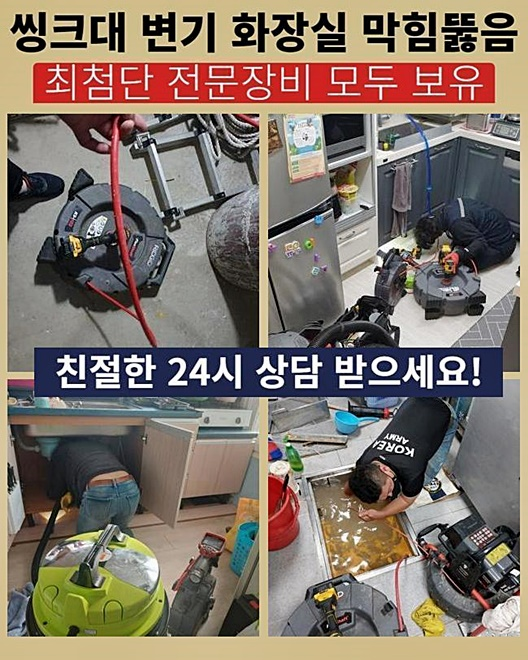
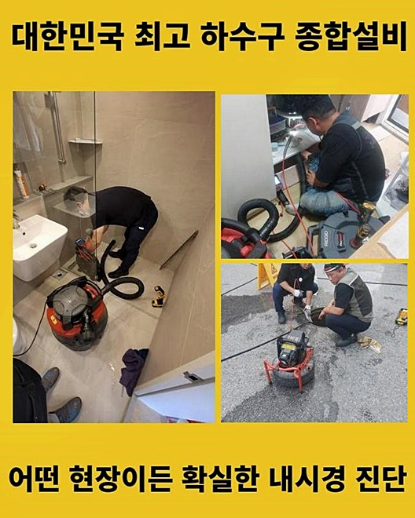
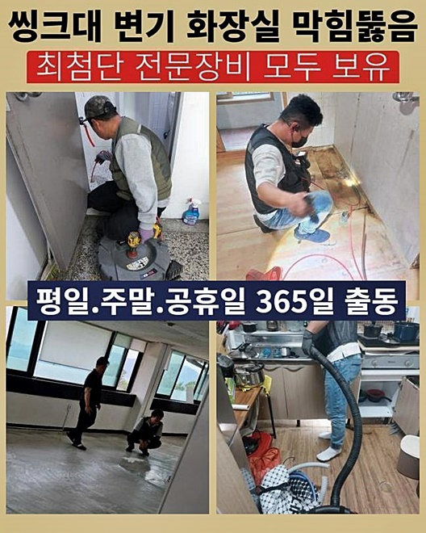
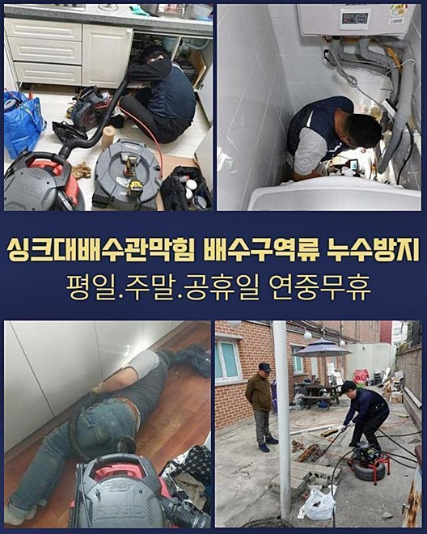
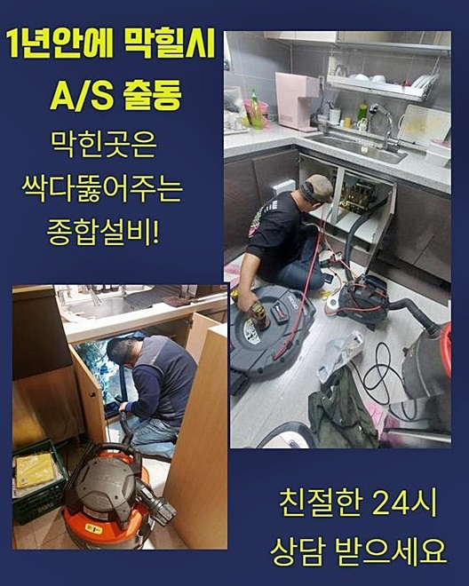
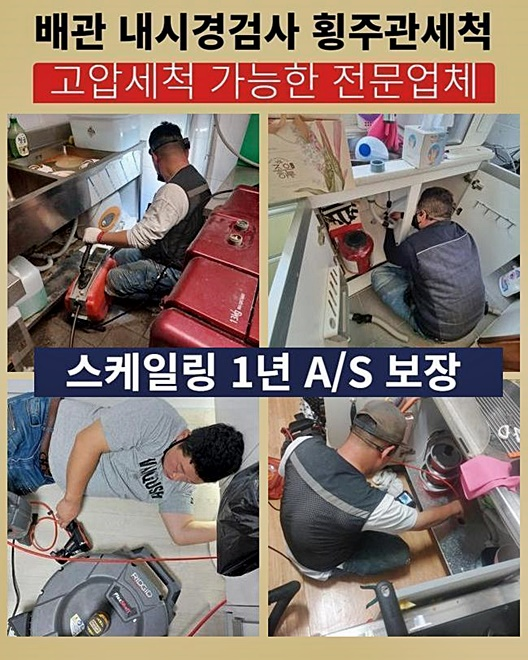
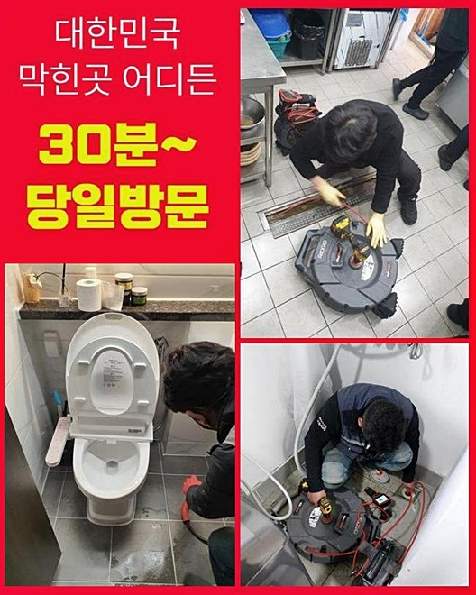

🏠 중구 산림동씽크대배수구역류 충무로 배수구뚫기 배관전문
용인시 처인구 고압세척 전문 시공 후기

📋 작업 개요
- 위치: 용인시 처인구, 수원시 영통구, 화성시 동탄
- 서비스 유형: 고압세척, 내시경점검
- 작업 일시:
- 업체명: 하수구수사대 (010-5615-2118)
🔍 문제 상황
중구 산림동씽크대배수구역류 충무로 배수구뚫기 배관전문
흔히 생기는 하수구 관련 배수문제를 잠재우고 복구하는 전문진이에요
의뢰자가 의뢰할땐 응당 여러 내용에 있어서 응대하고 있는데요
갑자기 욕실공간의 하수관이 심상치않다는 문의로 신속히 현장으로 당도했는데요
화장실의 경우 사용후에 머리카락뭉치와 상당수의 이물질이 누적되는 바람에 배수과정이 이뤄지지 못하는 사례가 많습니다
이와 비슷한 문제에선 주위에서 판매되고있는 것들론 통수불능을 시정해내는게 어렵기에 뚫어줄때는 성능좋은 장비라인을 통해서 증세의 시발점 위치를 집중타격해야해요
자주는 아니지만 끓는 온수를 흐르게 해주어 믹힘을 제거시키도록 무분별하게 진행하시는 고객님들도 계세요
이러한 방식도 증상완화를 꾀하기가 힘듭니다
끓는 물들을 배출시키면 이물질은 더욱더 굳는 특징을 띄기에 통수불능을 심하게 만들죠
그렇기에 하수구의 문제는 뛰어난 기기를 사용해줘야 해요
세척을 해줄때에 쓰는 장치를 점검을 위해 확인하고 의뢰인이 전달하신 공간으로 조속히 달려갔죠
단순한 하수관의 증상외에 일러드린 내용처럼 머리카락들과 석회와 같은 이물이 켜켜히 쌓이죠

🔎 원인 분석
💡 전문가 진단: 정밀 진단 장비를 사용하여 슬러지의 고착 여부를 판명하고 타격/세척 작업을 실시했습니다.
그러므로 정기적으로 관리책을 해야되겠습니다
고객님께는 작업방식을 일러드린 뒤 즉각 원인을 파악해서 피해를 얼마나 잘 헤쳐나가는지 낱낱이 설명드려볼게요
문제가 생긴 구간은 화장실 내측에 자리잡은 바닥하수관로로 보여졌어요
확인해보았더니 일반적인 직각형상의 캡으로 되어있지않고 트렌치부속으로 보여졌어요
물이 안빠짐과 동시에 예기치못한 물이 솟아오르는 피해들도 지속되고 있었습니다
일반적이라면 트랩부품을 거쳐 라인으로 흘러가지않은 잔여물은 여과하여 이물을 제외한 오수들을 아래로 보내주는 이점이 있습니다
하지만 내부에 있던 이물질들이 외부로 역류하게되면서 트랩부속도 제 기능을 수행할 수 없는 모습이였습니다
의뢰인분은 증세들이 심해지고 해당 장소를 쓰지못한다고 난처함을 말씀해주셨는데 불편들이 어마어마했을것으로 생각되어졌죠
이처럼 욕실공간에 자리한 설비들에서 증상들이 발현되면 여러방면에서 불편이 생겨나죠
그렇기에 빠르고 확실하게 원인을 해소하는게 0순위로서 필수적이죠
먼저 증세들의 시발점부터 인지해야되겠습니다
앞코의 촬영부속이 접착된 내시경기로 하수관로로 이용할때에는 안쪽 상황을 파악해가며 작업 스팟을 특정해 시공을 진행시킵니다
이런 탓에 다양한 증상이 생겨난 시점에 반드시 이용되어야하는 장치입니다

🔧 작업 과정
초입에서 잔여물이 상당했던 탓에 장치들을 배관으로 삽입하는게 곤란했어요
그럼에도 이런 변수에 가만히 있을 순 없어요
꾸준히 밀어넣으니 드디어 장비를 삽입시켰고 심부까지 파악해보고자 내측을 보다가 시야확보에 문제가 있었어요
벽측에는 잔여물이 심했죠
또한 하수관을 확실하게 파악못하는걸로 판단해보니 바깥쪽과같이 하수도의 끝에도 대량의 슬러지가 쌓인걸 확인해보았습니다
재차 배수관으로 내시경을 투입시키자 벽에선 알 수 없는 이물이 보여졌어요
배수관의 심층부엔 엉켜버린 모습으로 축적된 잔여물이 잔존해 있던 상태였습니다
장비를 사용해도 통수공간은 보이는 일이 없었으나 고착화된 이물은 군데군데 목격되었죠
이물질이 제대로 확인되지 않아도 흡착된 잔여물이 배수관의 끝머리서부터 축적된것을 파악했습니다
애로사항이 많던 현장이였으나 고객의 의뢰였기떄문에 넋놓고 내버려두어선 안되었어요
초입에 존재하던 여러가지의 오염물은 손을통해 제거시키고 안쪽에 누적된 것들은 샤프트 장치를 통하여 깨끗하게 해줄 계획을 세우게 되었어요
뛰어난 장비를 사용하는 까닭에 조속히 시정했어요
허나 잔여물질을 청소하면서 미스테리한 사안이 있었습니다
어째서 바닥지의 조각이 배수관에서 축적된건지 알기가 어려웠습니다
이같은 궁금증을 가지고 제거시키니 고객은 이러한 내용을 설명했죠
그 내용인 즉슨 며칠전 인테리어를 맡겼는데 그때 잔해가 하수관으로 빠진것으로 보여진다고 하셨어요
작업들이 끝났을땐 쓰레기들은 그 업체들이 폐기시키는게 맞습니다만 간혹 이에 대해 철두철미하지 못한 업체일 경우 오늘과같이 적절치 못한 방식으로 잔해온수를 흘려보내요
종합적으로 생각해보면 저희의 전문가가 내방했던 현장에서 시작해 이런 까닭들로 스트레스를 지속적으로 받으신것으로 보였어요
여기저기 장판오염물이라는 폐기물들이 통수를 이뤄지지못하게 하면서 흘러야될 물들이 흐름을 찾아가지 못했던것이죠
깨끗해질때까지 잔해세척과 석션을 하였더니 마침내 하수관을 뚫어내었어요


✅ 작업 완료
배수가 수월한지 확인을 수행하니 빠른 속도로 통수가 이뤄졌죠
제대로 청소가 되었다면 이처럼 배출되어야하겠으나 하수라인이 잔해물로 공간이 없어 배출이 안되고 역류증세들을 발생된거에요
수많은 현장들을 시정해왔으나 분야는 달라고 전문업체의 시각에서는 화까지 나며 고객이 감당해야하는 불편들에 이입이 될 수 밖에 없어요
이것처럼 오류들을 깔끔하게 시정하고 저희의 전문가들도 현장에서 발걸음을 옮겼죠
일상생활을 하시다가 혹여라도 배수장애가 나타나면 이 글을 기초로 해 안정적으로 대응하는게 중요하겠습니다
그밖에 궁금한 것이 있을 경우 빠르게 연락주시어 질문을 하셔도 좋으니 주저없이 문의가 필요할 경우 여러분께 도움들을 드릴게요




⚠️ 하수구 배관 막힘 예방 및 관리 가이드
- ✅ 머리카락, 비닐, 물티슈 등 물에 분해되지 않는 이물질은 절대 흘려보내지 마세요.
- ✅ 기름기 많은 식기는 설거지 전 키친타올로 먼저 기름때를 닦아내세요.
- ✅ 주기적으로 배수구에 뜨거운 물을 가득 부어주어 유지방 고착을 방지하세요.
- ✅ 작업 후 1년 이내 재발 시 무상 A/S 보증 서비스를 제공합니다.
💡 핵심 정리
- 확실한 장비 작업(내시경 점검 및 샤프트 스케일링)으로 원인을 뿌리 뽑습니다.
- 작업 후 1년 이내에 동일한 부위 재발 시 100% 무상 A/S 서비스를 보장합니다.
- 서울 · 경기 · 인천 전 지역에 24시간 언제든 긴급 출동할 수 있도록 항시 대기 중입니다.
❓ 자주 묻는 질문 (FAQ)
🚨 용인시 처인구 고압세척 문제로 고민이신가요?
정확한 원인 진단과 확실한 시공으로 재발 없는 해결을 약속드립니다.
24시간 긴급 출동 | 서울 · 경기 · 인천 전지역 | 1년 내 재발 시 무상 A/S